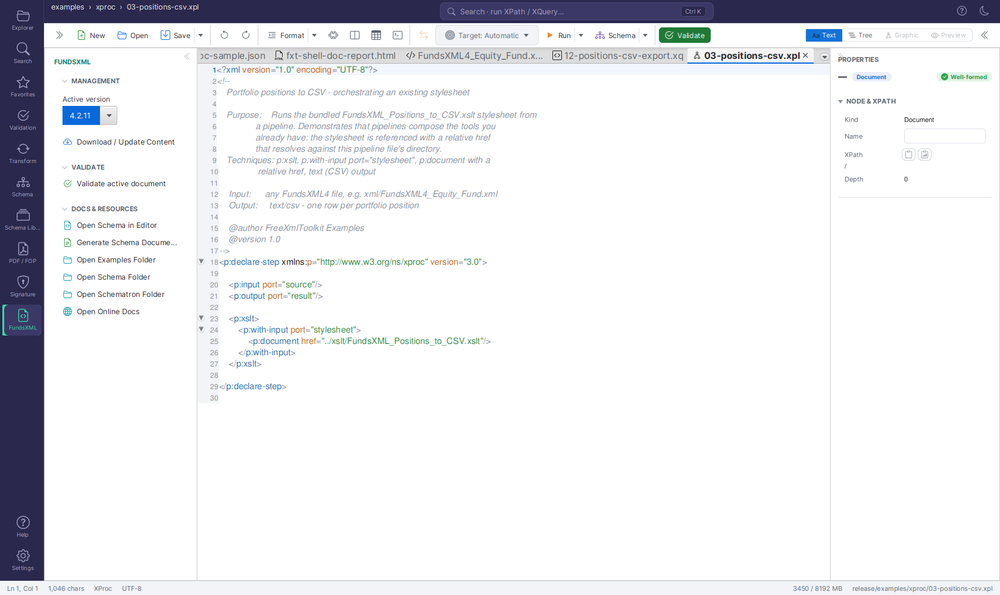
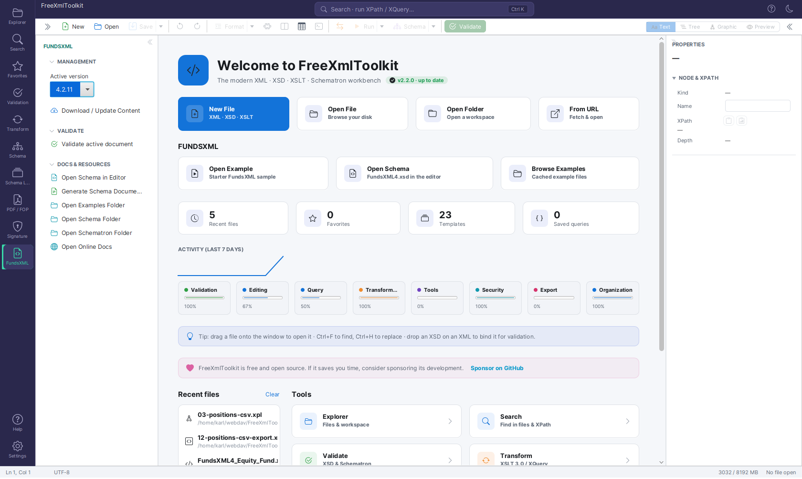

FundsXML Extensions¶
Version: 2.1.0
Optional integration with the FundsXML standard for the fund management industry. When enabled, FreeXmlToolkit automatically downloads and keeps up to date the official FundsXML schemas, sample documents, Schematron rules, and XPath/XQuery snippets - and uses them for quick validation of your own files.
This feature is off by default. Enable it only if you work with FundsXML documents.
Overview¶
FundsXML is an open XML standard used to exchange fund data between asset managers, fund administrators, depositaries, and regulators. The FundsXML community publishes:
- Schemas (XSD) - the official
FundsXML4.xsdand its include files - Examples - real-world sample XML documents
- Schematron rules - additional business-rule checks beyond what XSD covers
- Query snippets - useful XPath and XQuery expressions for common tasks
The FundsXML Extensions feature downloads all of this from the official GitHub repositories and integrates the content into FreeXmlToolkit so you can use it directly from the FundsXML side panel, the Welcome page, the Query Console, and Favorites.
Note: No FundsXML content is bundled with FreeXmlToolkit. Everything is fetched at runtime from the official GitHub repositories (fundsxml/schema, MIT License, and fundsxml/examples, Apache-2.0 License).
Enabling the Feature¶
The feature is opt-in. Until you enable it, nothing in the application changes.
- Open Settings (the gear icon at the bottom of the activity bar).
- Scroll to the FUNDSXML card.
- Check Enable FundsXML extensions.
- Save your settings.
Enabling the feature is all you need to do: the FundsXML content starts downloading automatically in the background, and a small toast notification tells you when it is ready. There is no separate download step.
Once enabled, the FundsXML integration appears in several places:
| Where | What appears |
|---|---|
| Activity bar | A new FundsXML activity with its own side panel |
| Welcome page | A FUNDSXML quick-access row with Open Example, Open Schema, and Browse Examples cards (shown as soon as content is cached) |
| Query Console | A FUNDSXML section in the Snippets menu with the community's example queries |
| Validation panel | A Validate against FundsXML entry in the ⋮ menu |
You can turn the feature off again at any time from the same Settings card. Disabling it hides these entries, but leaves the downloaded content on disk intact.
Downloading FundsXML Content¶
Downloads are fully automatic. Content is fetched in the background right after you enable the feature, and on every application start any missing content is downloaded again. When a background download finishes, a non-blocking toast notification appears - no dialogs interrupt your work.
You normally never need to trigger a download yourself. To force a manual refresh, open the FundsXML side panel and click Download / Update Content. The panel shows a progress bar with a stage description while a download is running - for manual and automatic background downloads alike.
Whenever content is downloaded (automatically or manually), the application will:
- Download the latest schema release from
fundsxml/schema(the officialFundsXML4.xsdand its included files). - Download example documents, XSLT stylesheets, Schematron rule files, and XPath/XQuery snippets from
fundsxml/examples. - Register the active XSD schema as a Favorite under the category FundsXML Schema (XSD type), so it shows up alongside your other schema favorites.
- Register the examples folder as a Favorite under FundsXML Examples, plus the most compact sample XMLs (up to 10) as individual file favorites for one-click access.
- Register each XSLT stylesheet found in the examples as an XSLT Favorite under FundsXML XSLT.
- Register the Schematron files as Favorites under the category FundsXML Schematron.
- Register the most compact sample XMLs as new-document templates under the FundsXML category, so you can start a fresh document from a real sample via the toolbar's New button (Ctrl+N) → Template list.
- Seed the XPath/XQuery snippets into your Saved Queries, tagged
fundsxml- they show up in the Query Console's Snippets menu under a FUNDSXML section (for example fund-summary, top-holdings, look-through, aggregate-by-assettype), and in the Transform panel's XPATH mode under the Saved menu. - Select the newly downloaded schema version as the active version.
- Make a compact starter sample available from the Welcome page's Open Example card, so you can immediately try Validate active document in the FundsXML panel.
Tip
Independently of this downloaded content, your FreeXmlToolkit installation itself ships
FundsXML4-based query collections in its examples folder: 32 XPath 3.1 examples
(examples/xpath/) and 17 XQuery 3.1 scripts (examples/xquery/), including a
reporting series that produces CSV, ASCII tables/charts, Markdown and JSON output.
Each folder has a README.md describing every example.
Existing versions are kept on disk - downloads are additive, not replacements. Downloads are idempotent — favorites, snippets, and templates that already exist are not duplicated. On every application start, favorites and query snippets are also re-registered from the on-disk cache, so they stay available even without a network connection.
Choosing an Active Schema Version¶
If you have downloaded more than one version of the FundsXML schema, you can switch between them.
Open the FundsXML side panel and pick the version from the Active version drop-down in the MANAGEMENT section.
The active version is the schema used by the Quick-validate action (see below) and by the Open Schema in Editor button. Switching does not delete any files - you can change versions back and forth freely.
Quick-Validate Your XML¶
The fastest way to check an XML file against the FundsXML schema:
- Open your XML document in the editor.
- Click Validate active document in the FundsXML side panel, or choose Validate against FundsXML from the Validation panel's ⋮ menu.
- If the document is valid, you get a confirmation message.
- If there are errors, they are listed line-by-line in an alert dialog so you can locate and fix each one.
The validation uses whichever FundsXML schema version is currently marked as active.
Tip: Use the Schematron Favorites under FundsXML Schematron to run additional business-rule checks. Open a Schematron file from Favorites, then validate your XML against it as you would with any other Schematron file.
The FundsXML Side Panel¶
Select the FundsXML activity in the activity bar to open its side panel.

It has three sections:
| Section | What you can do |
|---|---|
| MANAGEMENT | Pick the Active version and force a manual Download / Update Content. A progress bar with stage text at the bottom of the panel tracks running downloads - including automatic background downloads. |
| VALIDATE | Validate active document - check the open XML against the active FundsXML schema. |
| DOCS & RESOURCES | Open the schema and browse the downloaded content (see below). |
The DOCS & RESOURCES buttons:
| Button | What it does |
|---|---|
| Open Schema in Editor | Opens the active version's FundsXML4.xsd directly as an editor tab - explore it in the Text view or as a diagram in the Graphic view |
| Generate Schema Documentation | Generates browsable HTML documentation for the active schema into ~/.freeXmlToolkit/fundsxml/docs/<version>/ |
| Open Examples Folder | The folder with downloaded sample XML documents |
| Open Schema Folder | The folder containing the active schema and its include files |
| Open Schematron Folder | The folder with downloaded .sch rule files |
| Open Online Docs | Opens https://fundsxml.org/ in your default browser |
You can also reach the downloaded files directly through Favorites: example documents under FundsXML Examples, the active schema under FundsXML Schema, Schematron rules under FundsXML Schematron, and stylesheets under FundsXML XSLT (handy in the Transform panel's star menus).
Welcome Page Quick Access¶
When the feature is enabled and content is cached, the Welcome/Dashboard page shows a FUNDSXML quick-access row with three cards:

- Open Example - opens a compact starter sample document.
- Open Schema - opens
FundsXML4.xsdin the editor. - Browse Examples - opens the cached examples folder in your file manager.
The row appears automatically; if a background download is still running, it shows up live the moment the download finishes.
Where the Files Are Stored¶
All FundsXML content is stored under your user home directory:
~/.freeXmlToolkit/fundsxml/
├── schema/
│ └── <version>/
│ ├── FundsXML4.xsd
│ └── include_files/
├── examples/ (downloaded XML sample documents)
├── schematron/ (downloaded .sch rule files)
├── queries/ (downloaded XPath/XQuery snippets)
└── metadata.json (tracks installed versions and timestamps)
You can have multiple schema versions installed side by side; each lives in its own schema/<version>/ subfolder.
On Windows the path is typically C:\Users\<you>\.freeXmlToolkit\fundsxml\. On macOS and Linux it is /Users/<you>/.freeXmlToolkit/fundsxml/ or /home/<you>/.freeXmlToolkit/fundsxml/.
Automatic Update Checks¶
Updates are installed automatically instead of showing a dialog.
By default, FreeXmlToolkit checks once per day whether a newer FundsXML schema release is available on GitHub. If a new release is found, it is downloaded and installed automatically in the background - a toast notification confirms when the new content is in place, and the new version becomes the active one. There is no update dialog to answer.
The check is throttled to at most once every 24 hours and runs quietly in the background. Missing content (for example after clearing the cache folder) is also re-downloaded automatically on the next application start. To turn the daily check off, set fundsxml.update.check.enabled=false in your FreeXmlToolkit.properties file.
Contributing Snippets Upstream¶
The XPath/XQuery snippets in the queries/ folder follow a simple convention so the community can grow them.
If a queries/index.json manifest is present, it tells FreeXmlToolkit how to label and tag each snippet:
{
"snippets": [
{
"file": "list-portfolios.xq",
"name": "List all Portfolio IDs",
"type": "xquery",
"description": "Returns the unique identifier of every Portfolio in the document.",
"tags": ["fundsxml", "portfolio"]
},
{
"file": "total-nav.xpath",
"name": "Total Net Asset Value",
"type": "xpath",
"description": "Sum of all NAV values across funds.",
"tags": ["fundsxml", "nav"]
}
]
}
Field reference:
| Field | Description |
|---|---|
file |
Path of the snippet file relative to the queries/ folder |
name |
Short title shown in the Saved Queries list |
type |
Either xpath or xquery |
description |
Human-readable explanation (optional but recommended) |
tags |
List of tags used for filtering; include fundsxml for FundsXML snippets |
If no index.json is present, snippets are still loaded - file names are used as titles and the snippet type is inferred from the file extension.
To propose a snippet for everyone, submit a pull request to the fundsxml/examples repository.
Settings Reference¶
The feature's options and where to find them:
| Setting | Where | Description | Default |
|---|---|---|---|
| Enable FundsXML extensions | Settings page, FUNDSXML card | Master switch; enabling it starts the initial background download | Off |
| Active version | FundsXML side panel | Which downloaded schema version is used for Quick-validate and Open Schema in Editor | Latest installed |
| Download / Update Content | FundsXML side panel | Force a manual refresh from GitHub | - |
| Daily update check | fundsxml.update.check.enabled property |
Once-per-day background check that installs newer schema releases automatically | On |
These preferences are stored in your FreeXmlToolkit.properties file in the user home directory.
Troubleshooting¶
A download fails¶
- Check your internet connection.
- If you are behind a corporate proxy, configure proxy settings in the HTTP PROXY card of Settings.
- Verify that github.com is reachable from your network.
- Retry with Download / Update Content in the FundsXML side panel; the panel's status line shows the reason for the failure.
Quick-validate reports "No active schema"¶
The automatic background download has not finished yet (or it failed - for example without a network connection). Watch the progress bar in the FundsXML side panel and wait for the completion toast, or click Download / Update Content there to retry.
The FundsXML activity disappeared¶
The feature was disabled. Re-enable it under Settings -> FUNDSXML -> Enable FundsXML extensions. Your downloaded content is still on disk and will reappear immediately.
I want to remove everything¶
- Disable the feature in Settings (otherwise the content is re-downloaded automatically on the next start).
- Delete the folder
~/.freeXmlToolkit/fundsxml/. - Optionally remove the Favorites entries under FundsXML Examples, FundsXML Schema, FundsXML Schematron, and FundsXML XSLT.
Licensing¶
The FundsXML content downloaded by this feature is published by the FundsXML community:
- Schemas (
fundsxml/schema): MIT License - Examples, Schematron, Queries (
fundsxml/examples): Apache License 2.0
FreeXmlToolkit itself does not bundle any of this content - it is fetched from the public GitHub repositories only after you enable the feature.
Navigation¶
| Previous | Home | Next |
|---|---|---|
| Schematron Support | Home | Security Features |
All Pages: Unified Shell | XML Editor | XML Features | JSON Editor | XSD Tools | Profiled XML Generation | XSD Validation | XSLT Viewer | XSLT Developer | FOP/PDF | Signatures | IntelliSense | Schematron | FundsXML Extensions | Favorites | Templates | Tech Stack | Security | Licenses